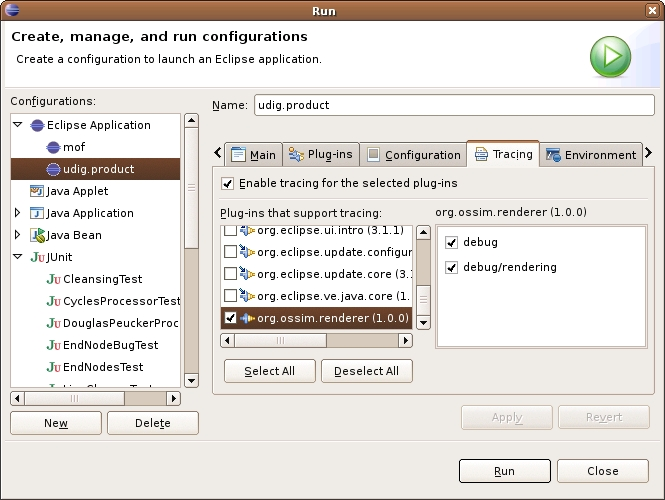

Debug tracing support allows you to enable debugging during execution inside Eclipse and get more information back. It allows you to pepper your code with helpful information and actions that are not normally executed except while debugging.
The example used in this article is of a plug-in named "org.ossim.renderer" that contains some code to render images. There is a need to print out information about those images while debugging, so tracing support is desirable.
Create a file named ".options" in the root directory of your plug-in. (This should be in the same directory as plugin.xml, .project and .classpath, and not the same directory as manifest.mf)
So:
plugins/org.ossim.renderer/.options
org.ossim.renderer/debug=true org.ossim.renderer/debug/rendering=true
Each entry is an entry for the tracing menu that is displayed in the Run.../Debug... dialog. They are hierarchical, so the top element here is "debug" that has one child element, "rendering". If "debug" is enabled when the program is being ran, rendering will be enabled too.
The value for each entry can be "true" or "false" and sets the default state for that tracing option. True usually works fine.
Here you can see the debug and debug/rendering options in the Run... dialog:

That is really all that is required, but there are some recommendations to make using tracing easier.
Static isDebugging method:
In your Plugin class, add this method:
/**
* Performs the Platform.getDebugOption true check on the provided trace
*
* @param trace constant, defined in the Trace class
* @return true if -debug is on for this plugin
*/
public static boolean isDebugging( final String trace ){
return getDefault().isDebugging() &&
"true".equalsIgnoreCase(Platform.getDebugOption(trace)); //$NON-NLS-1$
}
Static trace method:
In your Plugin class, also add a method that provides a mechanism for tracing:
/**
* Outputs a message or an Exception if the current plug-in is debugging.
*
* @param message if not null, message will be sent to standard out
* @param e if not null, e.printStackTrace() will be called.
*/
public static void trace( String message, Throwable e) {
if( getDefault().isDebugging() ) {
if( message != null ) System.out.println( message );
if( e != null ) e.printStackTrace();
}
}
Create a constants class for your tracing constants. I used
org.ossim.renderer.Trace:
package org.ossim.renderer; /** * Constants for use with Eclipse tracing API. * Sample use:<pre><code> * import static org.ossim.renderer.Trace.RENDERING; * * if( RendererPlugin.isDebugging( RENDERING ) ){ * System.out.println( "your message here" ); * } * </code></pre> * </p> */ public interface Trace { /** You may set this to "true" in your .options file */ public static final String RENDERING = "org.ossim.renderer/debug/rendering"; //$NON-NLS-1$ }
That's it. Now you can use it:
int width = Math.abs(max.x - min.x); int height = Math.abs(max.y - min.y); if (RendererPlugin.isDebugging(Trace.RENDERING)) { System.out.println("Width: " + width + ", height: " + height); }